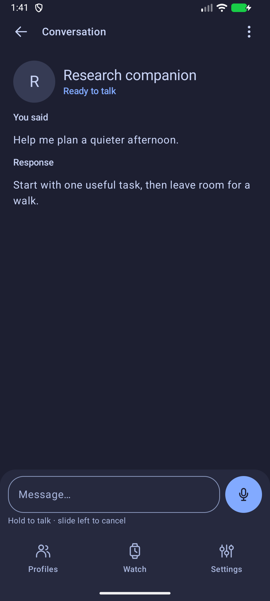
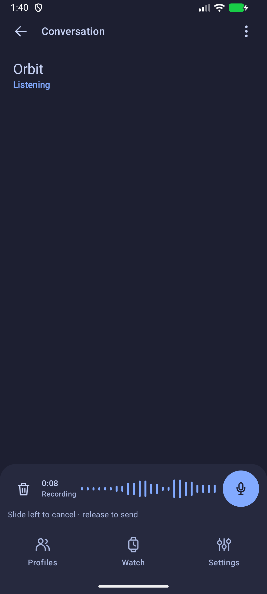
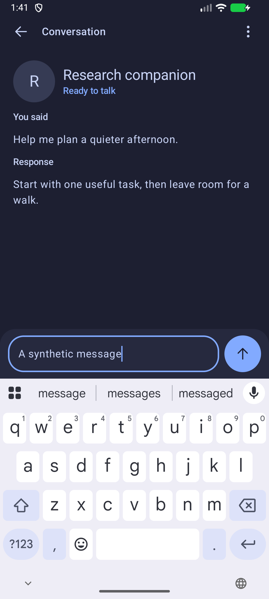
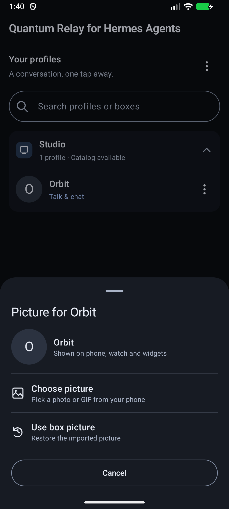
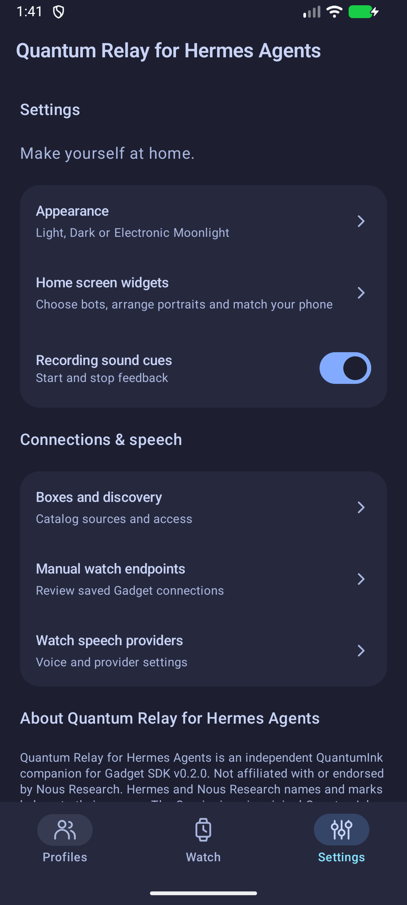
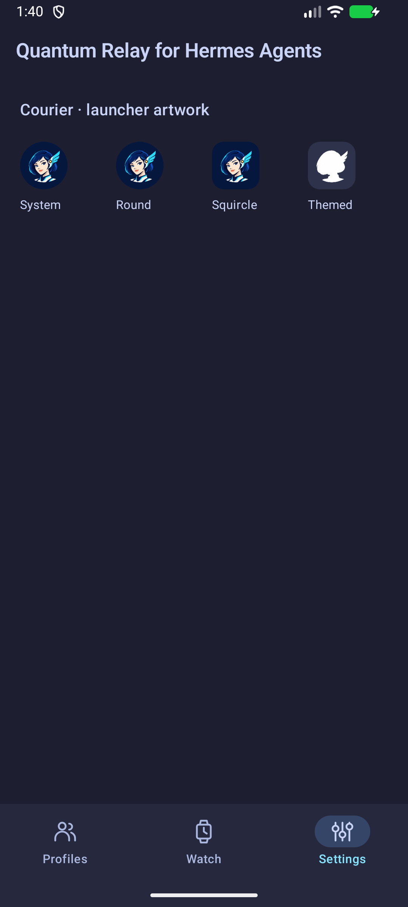

Native Android · Original synthetic captures
Quantum Relay for Hermes Agents
A compact text and voice composer, clear title hierarchy, usable picture controls and Courier. These are unretouched native screenshots from the owned Android emulator.

Read and reply. Text and voice share one baseline.
Hold, speak, release. Slide physically left to cancel. Layout fixture levels are synthetic.
Type naturally. Send remains reachable above the keyboard.Picture actions with room to breathe

Directory and Catalog use the same native sheet. The scrollable body leaves Cancel in its own footer.
The full title leads; Settings and Your profiles use smaller headings. Large text retains manual title scrolling.Courier, in the actual launcher layers

Original approved artwork. Themed icons use its precise head and headset silhouette.